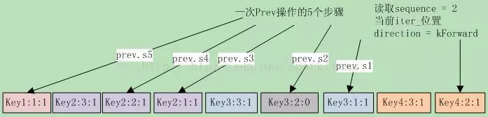

leveldb源码分析22
本系列《leveldb源码分析》共有22篇文章，这是第二十二篇
14 DB的查询与遍历之2
14.4 DBIter
Leveldb数据库的MemTable和sstable文件的存储格式都是(user key, seq, type) => uservalue。DBIter把同一个userkey在DB中的多条记录合并为一条，综合考虑了userkey的序号、删除标记、和写覆盖等等因素。 从前面函数NewIterator的代码还能看到，DBIter内部使用了MergingIterator，在调用MergingItertor的系列seek函数后，DBIter还要处理key的删除标记。否则，遍历时会把已删除的key列举出来。 DBIter还定义了两个移动方向，默认是kForward： 1） kForward，向前移动，代码保证此时DBIter的内部迭代器刚好定位在this->key(),this->value()这条记录上； 2） kReverse，向后移动，代码保证此时DBIter的内部迭代器刚好定位在所有key=this->key()的entry之前。 其成员变量savedkey和saved value保存的是KReverse方向移动时的k/v对，每次seek系调用之后，其值都会跟随iter_而改变。 DBIter的代码开始读来感觉有些绕，主要就是它要处理删除标记，而且其底层的MergingIterator，对于同一个key会有多个不同sequence的entry。导致其Next/Prev操作比较复杂，要考虑到上一次移动的影响，跳过删除标记和重复的key。 DBIter必须导出Iterator定义的几个接口，下面就拖出来挨个分析。
14.4.1 Get系接口
首先是几个简单接口，获取key、value和status的：
//kForward直接取iter_->value()，否则取saved value
virtual Slice value() const {
assert(valid_);
return (direction_ == kForward) ? iter_->value() : saved_value_;
}
virtual Status status() const {
if (status_.ok())
returniter_->status();
return status_;
}
14.4.2 辅助函数
在分析seek系函数之前，先来理解两个重要的辅助函数：FindNextUserEntry和FindPrevUserEntry的功能和逻辑。其功能就是循环跳过下一个/前一个delete的记录，直到遇到kValueType的记录。 先来看看，函数声明为： void DBIter::FindNextUserEntry(bool skipping, std::string* skip) 参数@skipping表明是否要跳过sequence更小的entry； 参数@skip临时存储空间，保存seek时要跳过的key； 在进入FindNextUserEntry时，iter_刚好定位在this->key(), this->value()这条记录上。下面来看函数实现：
virtual Slice key() const { //kForward直接取iter_->key()，否则取saved key
assert(valid_);
return (direction_ == kForward) ? ExtractUserKey(iter_->key()) : saved_key_;
}
// 循环直到找到合适的entry，direction必须是kForward
assert(iter_->Valid());
assert(direction_ == kForward);
do {
ParsedInternalKey ikey;
// 确保iter_->key()的sequence <= 遍历指定的sequence
if (ParseKey(&ikey) && ikey.sequence <= sequence_) {
switch (ikey.type) {
case kTypeDeletion:
//对于该key，跳过后面遇到的所有entry，它们被这次删除覆盖了
//保存key到skip中，并设置skipping=true
SaveKey(ikey.user_key, skip);
skipping = true;
break;
case kTypeValue:
if (skipping &&
user_comparator_->Compare(ikey.user_key, *skip) <= 0) {
// 这是一个被删除覆盖的entry，或者user key比指定的key小，跳过
}
else { // 找到，清空saved key并返回，iter_已定位到正确的entry
valid_ = true;
saved_key_.clear();
return;
}
break;
}
}
iter_->Next(); // 继续检查下一个entry
} while (iter_->Valid());
// 到这里表明已经找到最后了，没有符合的entry
saved_key_.clear();
valid_ = false;
FindNextUserKey移动方向是kForward，DBIter在向kForward移动时，借用了saved key作为临时缓存。FindNextUserKey确保定位到的entry的sequence不会大于指定的sequence，并跳过被删除标记覆盖的旧记录。 接下来是FindPrevUserKey，函数声明为：void DBIter::FindPrevUserEntry()，在进入FindPrevUserEntry时，iter_刚好位于saved key对应的所有记录之前。源代码如下：
assert(direction_ == kReverse); // 确保是kReverse方向
ValueType value_type =kTypeDeletion; //后面的循环至少执行一次Prev操作
if (iter_->Valid()) {
do { // 循环
// 确保iter_->key()的sequence <= 遍历指定的sequence
ParsedInternalKey ikey;
if (ParseKey(&ikey)&& ikey.sequence <= sequence_) {
if ((value_type !=kTypeDeletion) &&
user_comparator_->Compare(ikey.user_key, saved_key_) < 0) {
break; // 我们遇到了前一个key的一个未被删除的entry，跳出循环
// 此时Key()将返回saved_key，saved key非空；
}
//根据类型，如果是Deletion则清空saved key和saved value
//否则，把iter_的user key和value赋给saved key和saved value
value_type = ikey.type;
if (value_type ==kTypeDeletion) {
saved_key_.clear();
ClearSavedValue();
} else {
Slice raw_value =iter_->value();
if(saved_value_.capacity() > raw_value.size() + 1048576) {
std::string empty;
swap(empty,saved_value_);
}
SaveKey(ExtractUserKey(iter_->key()), &saved_key_);
saved_value_.assign(raw_value.data(), raw_value.size());
}
}
iter_->Prev(); // 前一个
} while (iter_->Valid());
}
if (value_type == kTypeDeletion){ // 表明遍历结束了，将direction设置为kForward
valid_ = false;
saved_key_.clear();
ClearSavedValue();
direction_ = kForward;
} else {
valid_ = true;
}
函数FindPrevUserKey根据指定的sequence，依次检查前一个entry，直到遇到user key小于saved key，并且类型不是Delete的entry。如果entry的类型是Delete，就清空saved key和saved value，这样在依次遍历前一个entry的循环中，只要类型不是Delete，就是要找的entry。这就是Prev的语义。
14.4.3 Seek系函数
了解了这两个重要的辅助函数，可以分析几个Seek接口了，它们需要借助于上面的这两个函数来跳过被delete的记录。
void DBIter::Seek(const Slice& target) {
direction_ = kForward; // 向前seek
// 清空saved value和saved key，并根据target设置saved key
ClearSavedValue();
saved_key_.clear();
AppendInternalKey( // kValueTypeForSeek(1) > kDeleteType(0)
&saved_key_,ParsedInternalKey(target, sequence_, kValueTypeForSeek));
iter_->Seek(saved_key_); // iter seek到saved key
//可以定位到合法的iter，还需要跳过Delete的entry
if (iter_->Valid()) FindNextUserEntry(false,&saved_key_);
else valid_ = false;
}
void DBIter::SeekToFirst() {
direction_ = kForward; // 向前seek
// 清空saved value，首先iter_->SeekToFirst，然后跳过Delete的entry
ClearSavedValue();
iter_->SeekToFirst();
if (iter_->Valid()) FindNextUserEntry(false,&saved_key_ /*临时存储*/);
else valid_ = false;
}
void DBIter::SeekToLast() { // 更简单
direction_ = kReverse;
ClearSavedValue();
iter_->SeekToLast();
FindPrevUserEntry();
}
14.4.4 Prev()和Next()
Next和Prev接口，相对复杂一些。和底层的merging iterator不同，DBIter的Prev和Next步进是以key为单位的，而mergingiterator是以一个record为单位的。所以在调用merging Iterator做Prev和Next迭代时，必须循环直到key发生改变。 这次让我们以Prev为例，以14.4-1图解一下，还真是一图胜千言啊。 假设指定读取的sequence为2，当前iter在key4:2:1上，direction为kForward。此时调用Prev()，此图显示了Prev操作执行的5个步骤：

S1 首先因为direction为kForward，先调整iter到key3:1:1上。此图也说明了调整的理由，key4:2:1前面还有key4:3:1。然后进入FindPrevUserEntry函数，执行S2到S4。 S2 跳到key3:2:0上时，这是一个删除标记，清空saved key（其中保存的是key3:1:1）。 S3 循环继续，跳到key2:1:1上，此时key2:1:1 > saved key，设置saved key为key2:1:1，并继续循环。 S4 循环继续，跳到key2:2:1上，此时key2:2:1 > saved key，设置saved key为key2:2:1，并继续循环。 S5 跳到Key1:1:1上，因为key1:1:1 < saved key，跳出循环。 最终状态iter_位置在key1:1:1上，而saved key保存的则是key2:2:1上，这也就是Prev应该定位到的值。也就是说在Prev操作下，iter_的位置并不是真正的key位置。这就是前面Get系函数中，在direction为kReverse时，返回saved key/value的原因。 同理，在Next时，如果direction是kReverse，根据上面的Prev可以发现，此时iter刚好是saved key的前一个entry。执行iter->Next()就跳到了saved key的dentry范围的sequence最大的那个entry。在前面的例子中，在Prev后执行Next，那么iter首先跳转到key2:3:1上，然后再调用FindNextUserEntry循环，使iter定位在key2:2:1上。 下面首先来分析Next的实现。如果direction是kReverse，表明上一次做的是kReverse跳转，这种情况下，iter位于key是this->key()的所有entry之前，我们需要先把iter跳转到this->key()对应的entries范围内。
void DBIter::Next() {
assert(valid_);
if (direction_ == kReverse) { //需要预处理，并更改direction=kForward
direction_ = kForward;
// iter_刚好在this->key()的所有entry之前，所以先跳转到this->key()
// 的entries范围之内，然后再做常规的skip
if (!iter_->Valid()) iter_->SeekToFirst();
else iter_->Next();
if (!iter_->Valid()) {
valid_ = false;
saved_key_.clear();
return;
}
}
// 把saved_key_ 用作skip的临时存储空间
std::string* skip =&saved_key_;
SaveKey(ExtractUserKey(iter_->key()), skip);// 设置skip为iter_->key()的user key
FindNextUserEntry(true, skip);
}
接下来是Prev()，其实和Next()逻辑相似，但方向相反。
如果direction是kForward，表明上一次是做的是kForward跳转，这种情况下，iter_指向当前的entry，我们需要调整iter，使其指向到前一个key，iter的位置是这个key所有record序列的最后一个，也就是sequence最小的那个record。
void DBIter::Prev() {
assert(valid_);
if (direction_ == kForward) { //需要预处理，并更改direction
// iter_指向当前的entry，向后扫描直到key发生改变，然后我们可以做
//常规的reverse扫描
assert(iter_->Valid()); // iter_必须合法，并把saved key设置为iter_->key()
SaveKey(ExtractUserKey(iter_->key()), &saved_key_);
while (true) {
iter_->Prev();
if (!iter_->Valid()) { // 到头了，直接返回
valid_ = false;
saved_key_.clear();
ClearSavedValue();
return;
}
if (user_comparator_->Compare(ExtractUserKey(iter_->key()),
saved_key_) < 0) {
break; // key变化就跳出循环，此时iter_刚好位于saved key对应的所有entry之前
}
}
direction_ = kReverse;
}
FindPrevUserEntry();
}
接下来要分析的是插入和删除操作。
14.5 小结
查询操作并不复杂，只需要根据seq找到最新的记录即可。知道leveldb的遍历会比较复杂，不过也没想到会这么复杂。这主要是得益于sstable 0的重合性，以及memtable和sstable文件的重合性。
leveldb源码分析全系列完。